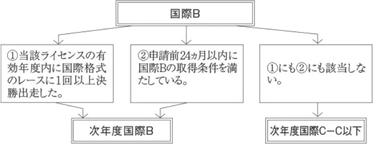
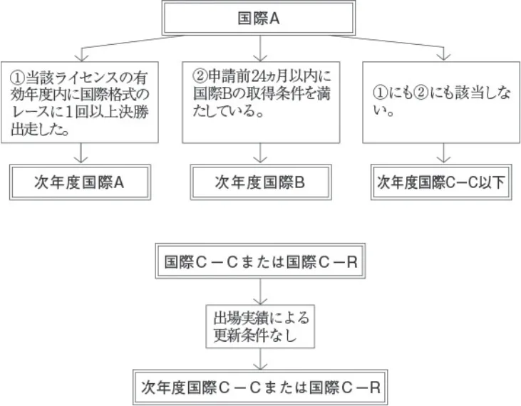
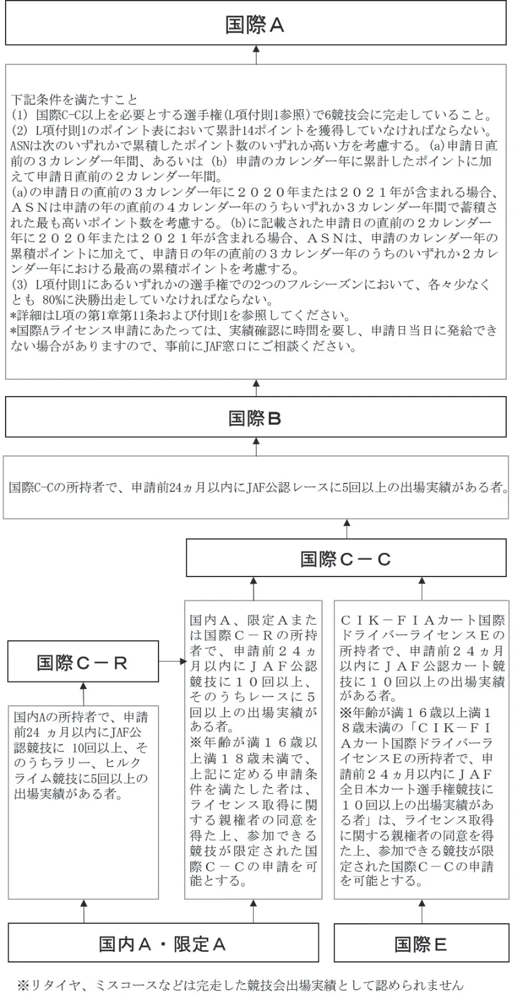
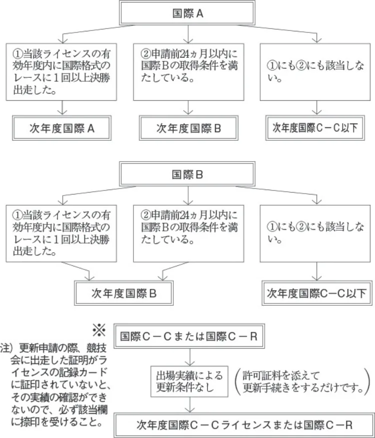

FIA国際ドライバーライセンス規定の補足事項
JAF の公式サイトではありません。JAF が公開する PDF を自動変換した非公式の検索用アーカイブです。記載内容は必ず JAF の原本 PDF で出典をご確認ください。 検索と AI 質問つきのビューアで開く
P.1ＦＩＡ国際ドライバーライセンス規定の補足事項
国際ライセンスの更新条件
国際モータースポーツ競技規則付則Ｌ項第１章
第10条10．４）、第11条11．６）
グレードＡまたはＢライセンスに対する条件を維持するためには、そのドライバーは12ヵ月毎に適切なカテゴリーの
国際格式競技に最低１戦出場しているか、またそうでない場合には国際格式競技の練習走行期間の間、ライセンスを発給しているＡＳＮが納得するまで、再審査されなくてはならない。
ＪＡＦは日本の国際レースの開催状況を考慮して、国際モータースポーツ競技規則から解釈できる範囲において、国
際ライセンス取得・更新申請の際の競技会出場実績を下記の通り取り扱うこととする。
国際Ａ・Ｂライセンスの更新条件である「当該年度に国際格式競技に出場した場合」に加えて、下記条件にても更新
申請を認める。
１）国際Ｂライセンス更新の場合※
国際Ｂライセンスの取得方法に関わらず（推薦による取得も含む）、国際モータースポーツ競技規則付則Ｌ項の
記述に従い、申請前の２４ヵ月以内に取得条件を満たしている者は更新を認める。

２）国際Ａライセンス更新の場合※
国際Ａライセンスの取得方法に関わらず（推薦による取得も含む）、国際モータースポーツ競技規則付則Ｌ項の
記述に従い、申請前２４ヵ月以内に国際Ｂの取得条件を満たしている者は、国際Ｂライセンスへの降格更新を認める。

※国際Ａ・Ｂライセンスの更新条件にある国際格式レースの決勝出走実績は、当該ライセンスを所得した後の実績である。
P.2国際Ａ・Ｂ・ＣーＣ・ＣーＲライセンスの取得方法（抜粋）

P.3国際Ａ・Ｂライセンスの更新条件（抜粋）
国際競技運転者許可証（Ａ・Ｂ）は“ＦＩＡ国際ドライバーライセンス規定”に従い発給される。またその更新条件に
ついても明記されており、詳細については同規定を参照のこと。
現在所持しているものの更新条件は下図に要約してあるので、確認の上申請手続きをすること。
